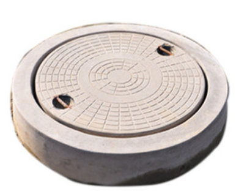

RCC Manhole Cover Manufacturer in Panipat & Karnal
We manufacture and supply RCC manhole covers, also known as concrete manhole covers, cement manhole covers and precast manhole covers for residential, commercial and industrial use. Our construction-grade chamber covers are supplied across Panipat, Karnal, Samalkha, Sonipat, Kurukshetra, Shamli and Muzaffarnagar.
Applications of RCC / Concrete Manhole Covers
- Drainage chambers
- Sewer lines
- Residential housing projects
- Industrial sites
- Roadside and footpath chambers
Specifications
Available Sizes:
- 1 ft x 1 ft
- 1.5 ft x 1.5 ft
- 2 ft x 2 ft
- Custom sizes as per requirement
Load Capacity:
- Light Duty
- Medium Duty
- Heavy Duty
Concrete Grade: M20 / M25 as per project requirement
Advantages of Precast RCC Manhole Covers
- High strength and durability
- Factory-controlled concrete mix
- Proper reinforcement
- Cost-effective alternative to cast iron covers
- Suitable for construction and infrastructure projects
Also explore our CC Drain Covers & Saucer Drains.


Areas We Supply
We supply RCC, concrete and cement manhole covers in Panipat, Karnal, Samalkha, Sonipat, Kurukshetra, Delhi, Shamli and Muzaffarnagar.
FAQ – RCC / Concrete Manhole Covers
What is an RCC manhole cover?
An RCC manhole cover is a reinforced cement concrete cover used to close drainage or sewer chambers. It is also called a concrete or cement manhole cover in construction projects.
What sizes are available?
We manufacture 1x1 ft, 1.5x1.5 ft and 2x2 ft precast manhole covers, along with customised sizes based on project needs.
Are RCC manhole covers suitable for road use?
Yes. Heavy-duty reinforced concrete manhole covers are suitable for roadside and moderate traffic areas when installed properly.
Do you supply in nearby cities?
Yes. We supply across Panipat, Karnal and nearby districts including Samalkha, Sonipat, Kurukshetra, Shamli and Muzaffarnagar.